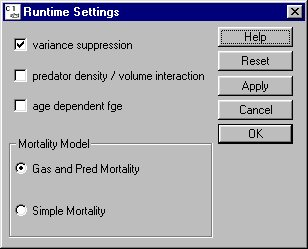

Runtime Settings: Different Model Configurations
Selecting Run Runtime Settings opens a window for specifying several functional relationships for run execution. COMPASS can be run with different functions that effect the movement and survival of fish through the river system. Settings are selected or cleared by clicking the respective check box. Each relationship is described in the following sections. Any Runtime Settings you want to take effect during a Monte Carlo Mode run must be applied and saved to a yearly input data file (
Runtime Settings opens a window for specifying several functional relationships for run execution. COMPASS can be run with different functions that effect the movement and survival of fish through the river system. Settings are selected or cleared by clicking the respective check box. Each relationship is described in the following sections. Any Runtime Settings you want to take effect during a Monte Carlo Mode run must be applied and saved to a yearly input data file (.dat or .cnf) specified in the Monte Carlo alternative.

Runtime Settings window